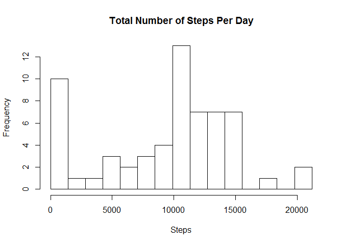
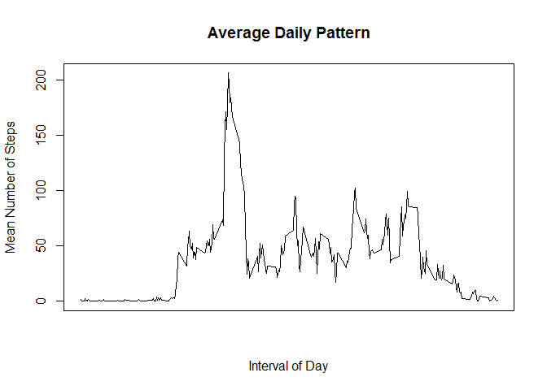

Activity Monitoring
Bob Weiner
November 12, 2015
Introduction
suppressMessages({ # dplyr masks objects from other packages
library(stringr)
library(dplyr)
})
# Constants
workingDir <- "C:/Users/Bob/Dropbox/School/Coursera/Reproducible Research/RepData_PeerAssessment1"
histogram.cells = 15Loading and Preprocessing
# 1. Load the activity data
act <- read.csv(
file = unzip(
zipfile = str_c(workingDir, "/activity.zip"),
files = "activity.csv"),
stringsAsFactors = FALSE)
# 2. Transform data
act$date <- as.Date(act$date)Mean Total Steps Per Day
# 1. Calculate total steps per day
act.total.raw <- act %>%
group_by(date) %>%
summarise(total = sum(steps, na.rm = T))
head(act.total.raw)## Source: local data frame [6 x 2]
##
## date total
## (date) (int)
## 1 2012-10-01 0
## 2 2012-10-02 126
## 3 2012-10-03 11352
## 4 2012-10-04 12116
## 5 2012-10-05 13294
## 6 2012-10-06 15420# 2. Create Histogram
hist (act.total.raw$total,
breaks = seq(from = min(act.total.raw$total),
to = max(act.total.raw$total),
by = ( max(act.total.raw$total) -
min(act.total.raw$total)) / histogram.cells),
main = 'Total Number of Steps Per Day',
xlab = 'Steps'
)

# 3. Mean and median steps per day
act.mean.raw <- mean(act.total.raw$total)
act.median.raw <- median(act.total.raw$total)Average Daily Activity Pattern
# 1. Time series plot of 5-min interval and average steps
# Average Daily Pattern
adp = act %>%
group_by(interval) %>%
summarise(meanSteps = mean(steps, na.rm = T))
# Plot pattern
plot(adp$interval,
adp$meanSteps,
type = 'l',
main = 'Average Daily Pattern',
xlab = 'Interval of Day',
ylab = 'Mean Number of Steps',
xaxt = 'n')
# Add x-axis tick marks at every 2 hours
ticks.num <- 12
ticks <- adp$interval[0:(ticks.num-1) * (nrow(df)/ticks.num) + 1]
axis(side = 1, at = ticks)
# 2. Max number of interval steps
max(adp$meanSteps)## [1] 206.1698Imputing Missing Values
# 1. Total number of rows with NAs
steps.missing = sum(is.na(act$steps))
# 2. Filling in missing values from adp and
# 3. Create a new dataset
newAct <- act %>%
inner_join(adp, by = 'interval') %>%
mutate(steps = ifelse(is.na(steps),
meanSteps,
steps)) %>%
select(steps:interval)
# 4a. Histogram of total steps per day
act.total.imputed <- newAct %>%
group_by(date) %>%
summarise(total = sum(steps, na.rm = T))
hist(act.total.imputed$total,
breaks = seq(from = min(act.total.imputed$total),
to = max(act.total.imputed$total),
by = ( max(act.total.imputed$total) -
min(act.total.imputed$total)) / histogram.cells),
main = 'Total Number of Steps Per Day',
xlab = 'Steps'
)

# 4b. Mean and median of total steps per day
act.mean.imputed <- mean(act.total.imputed$total)
act.median.imputed <- median(act.total.imputed$total)
# 4c. Compare mean and median with and without imputed values
matrix(
c(act.mean.raw,
act.median.raw,
abs(act.mean.imputed - act.mean.raw) / act.mean.raw,
act.mean.imputed,
act.median.imputed,
abs(act.median.imputed - act.median.raw) / act.median.raw),
nrow = 3,
dimnames = list(
c('Raw', 'Imputed', '% Change'),
c('Mean', 'Median')
)
)## Mean Median
## Raw 9.354230e+03 1.076619e+04
## Imputed 1.039500e+04 1.076619e+04
## % Change 1.509434e-01 3.570839e-02# 4d. Impact of imputing missing dataDifferences in Activity Patterns
library(lattice)
# 1. Create factor variable for Weekend & Weekday
act.daytype <- act %>%
mutate(weekday = as.factor(
ifelse(weekdays(date) %in% c('Saturday', 'Sunday'), 'Weekend', 'Weekday')
)) %>%
group_by(weekday, interval) %>%
summarise(meanSteps = mean(steps, na.rm = TRUE))
# 2. Create plots of average steps on Weekdays & Weekends
xyplot(meanSteps ~ interval | weekday,
data = act.daytype,
layout = c(1, 2),
type = 'l',
main = "Weekday vs. Weekend Activity",
xlab = "Interval",
ylab = "Number of steps")